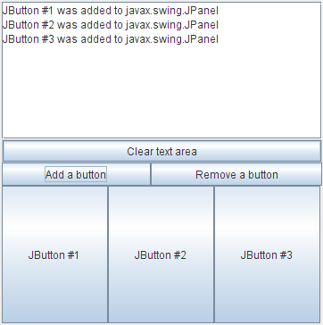

Lección: Escribiendo Listener Events
Sección: Implementando Listeners para los Eventos Comunmente Manejados
Cómo Escribir un Container Listener
Los eventos de contenedor son disparados por un Container justo después de que se agrega o elimina
un componente del contenedor. Estos eventos son para notificación sólo — no es necesario que haya un
container listener para que los componentes se agreguen o eliminen correctamente.
El ejemplo siguiente demuestra los eventos de contenedor. Pulsando Add a button o Remove a button, puede agregar botones o eliminarlos del panel en la parte de abajo de la ventana. Cada vez que un botón es agregado o eliminado del panel, el panel dispara un evento de contenedor, y se le notifica al listener container del panel. El listener muestra mensajes descriptivos en el área de texto en lo alto de la ventana.

Intente esto:
-
Pulse el botón Lanzar para ejecutar ContainerEventDemo usando
Java™ Web Start (
descargue KDJ 7 o posterior). Alternativamente, para compilar y ejecutar el ejemplo por sí
mismo, consulte el
índice de ejemplos.

-
Pulse el botón etiquetado Add a button.
Verá un botón que aparecerá cerca de la parte de abajo de la ventana. El container listener reaccionará al evento resultante del componente agregado mostrando "JButton #1 was added to javax.swing.JPanel" en la parte inicial de la ventana. -
Pulse el botón etiquetado Remove a button.
Esto elimina el botón agregado más recientemente del panel, provocando que el container listener reciba un evento de componente eliminado.
Puede encontrar el código de la demostración en
ContainerEventDemo.java. Aquí está el código del manejo del evento de contenedor
de la demostración:
public class ContainerEventDemo ... implements ContainerListener ... {
...//where initialization occurs:
buttonPanel = new JPanel(new GridLayout(1,1));
buttonPanel.addContainerListener(this);
...
public void componentAdded(ContainerEvent e) {
displayMessage(" added to ", e);
}
public void componentRemoved(ContainerEvent e) {
displayMessage(" removed from ", e);
}
void displayMessage(String action, ContainerEvent e) {
display.append(((JButton)e.getChild()).getText()
+ " was"
+ action
+ e.getContainer().getClass().getName()
+ newline);
}
...
}
La IPA de Container Listener
La clase adaptadora correspondiente es
ContainerAdapter.
| Método | Propósito |
|---|---|
| componentAdded(ContainerEvent) | Llamado justo después de que un componente se agregue al contenedor monitorizado. |
| componentRemoved(ContainerEvent) | Llamado justo después de que un componente sea eliminado de un contenedor monitorizado. |
| Método | Propósito |
|---|---|
| Component getChild() | Devuelve el componente cuya agregación o eliminación disparó este evento. |
| Container getContainer() |
Devuelve contenedor que disparó este evento. Puede usar esto en vez del método getSource.
|
Ejemplos que Usan Container Listeners
La siguiente tabla lista los ejemplos que usan container listeners.
| Ejemplo | Dónde está descrito | Notas |
|---|---|---|
ContainerEventDemo
|
Esta sección | Informa de todos los eventos de contenedor que ocurren en un panel único para demostrar las circunstancias bajo las cuales los eventos de contenedor son disparados. |